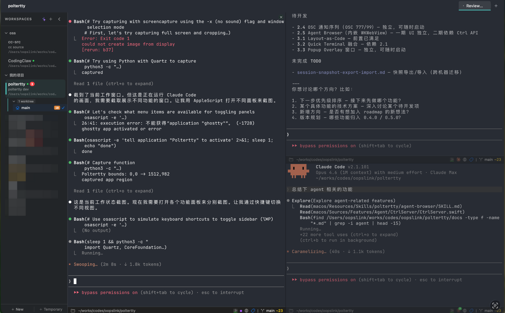
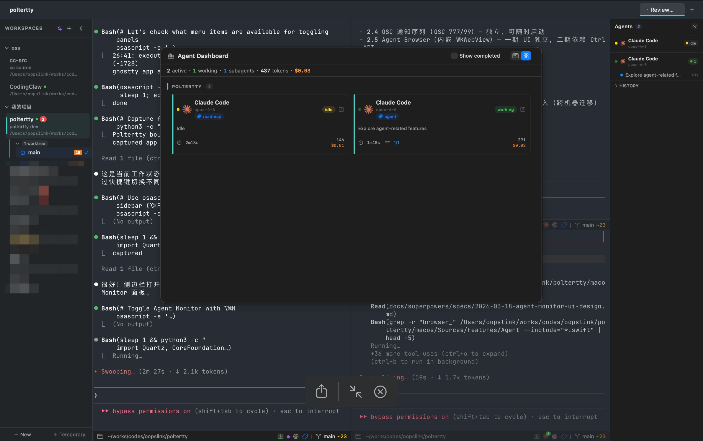
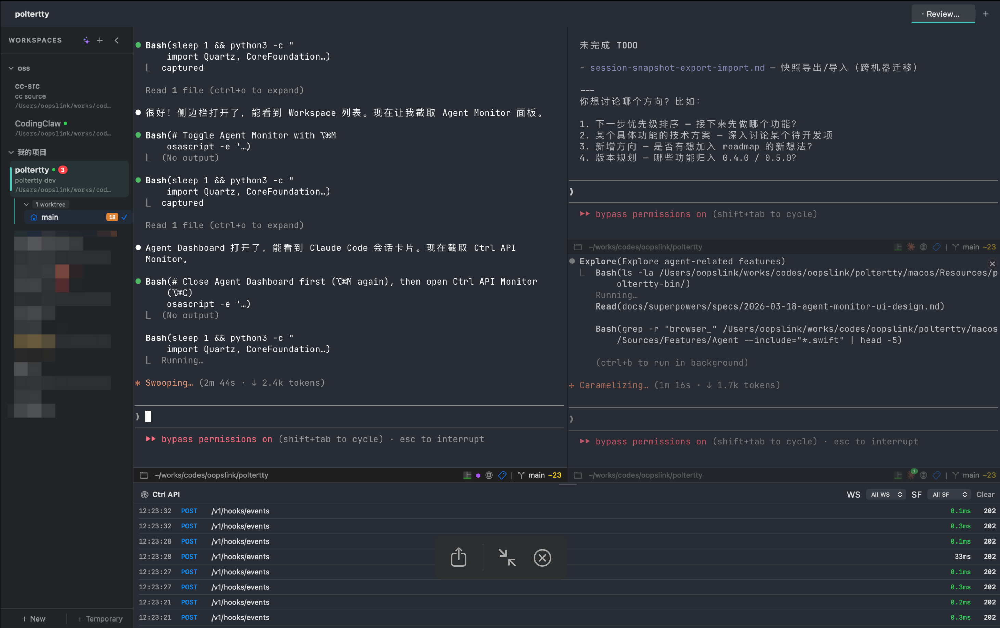
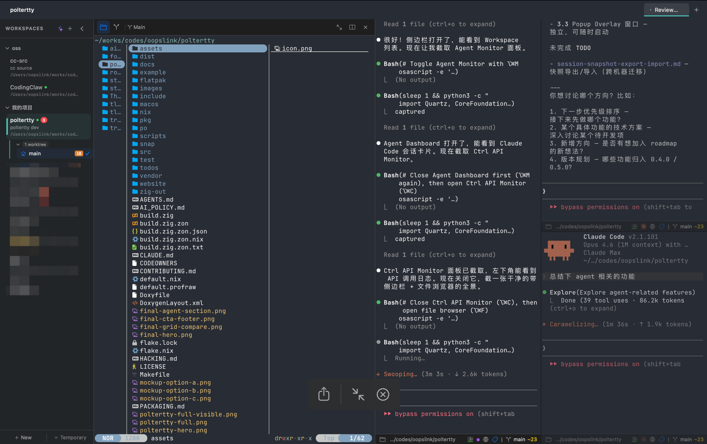
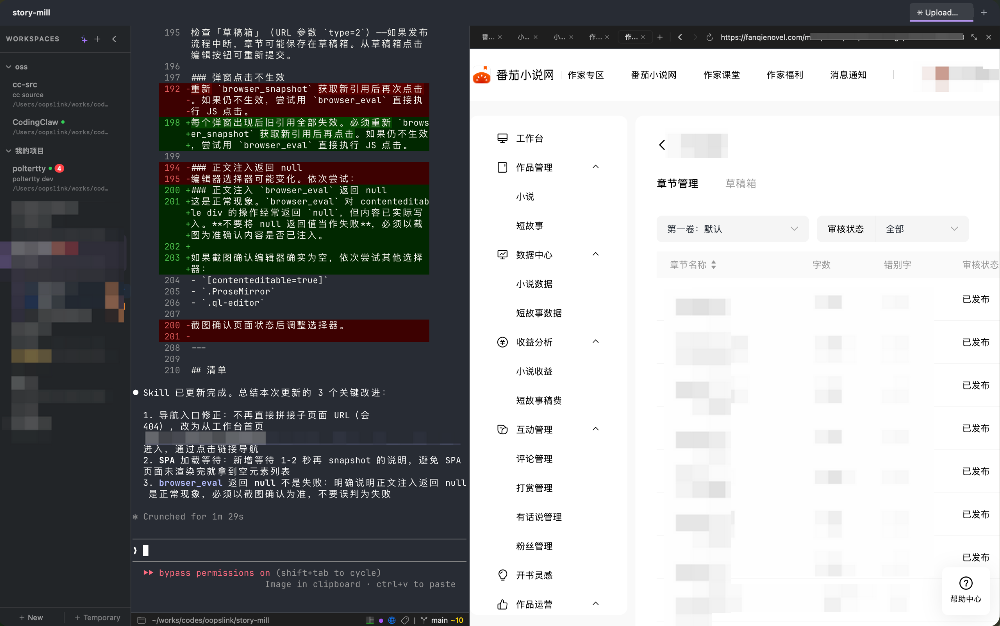
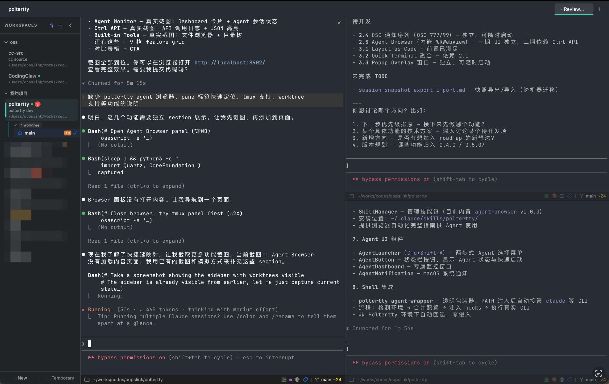
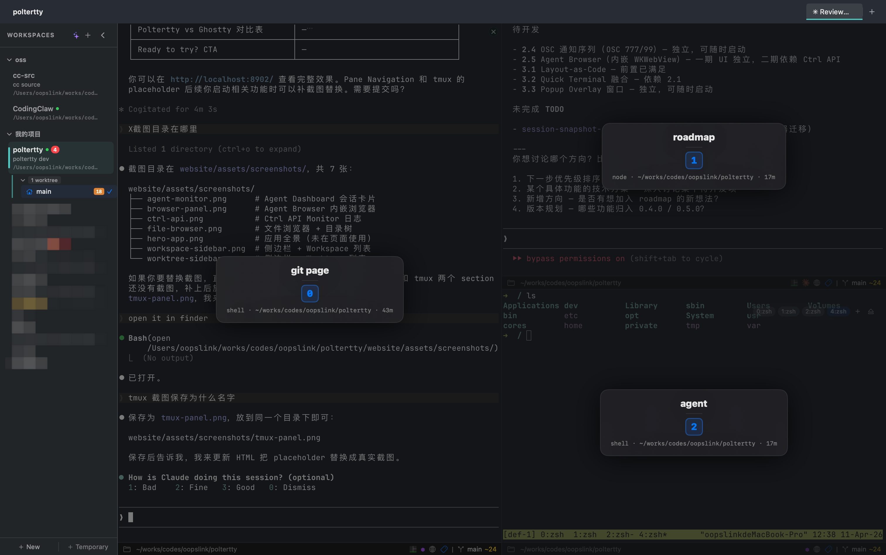
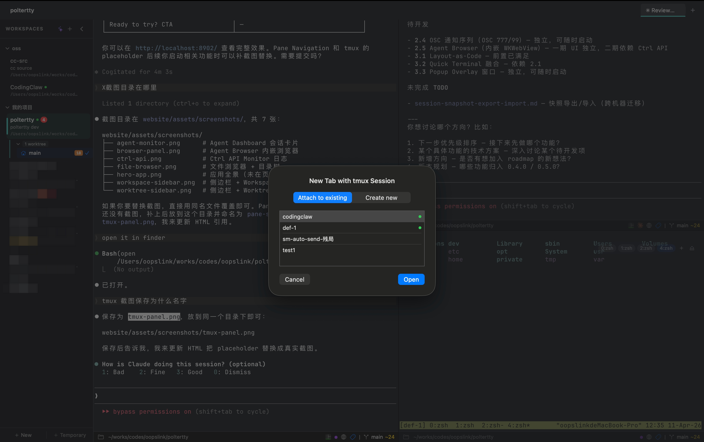

Ghostty fork，为 AI 原生开发而生。
Workspace 管理 / Agent 监控 / MCP 控制 / 文件浏览 / Git 面板。
名称、颜色、图标、根目录 — 每个 Workspace 就是一个完整的工作上下文。窗口布局自动持久化，重启后一切如初。

screenshot: workspace sidebar⌘K 模糊搜索，瞬间跳转到任何项目。不打断心流。
侧边栏直接管理 worktree，一键切换分支环境，文件浏览器跟随。
布局、分割、标签页 — 关闭重启后自动恢复原样。
原生追踪 Claude Code、Gemini CLI、OpenCode 会话。子 agent 调用树、工具调用时间线、token 用量实时可见。

水平展开 subagent 调用链，工具调用、耗时一目了然。
waiting / error / done。焦点在 pane 上时自动静默，不打扰。
⌘⌥D 全局仪表盘，跨 Workspace 汇总所有 agent 会话。
内嵌 MCP 服务器，AI agent 可以列出面板、发送命令、分割窗格、截图 — 全部通过 API。启动时自动注入配置，零设置。

send_text, split_pane, screenshot, focus_pane — 8+ 内置工具覆盖完整终端操作。
实时推送 agent_status_changed、workspace_switched 等事件。
SettingsMerger 启动时自动注入 MCP URL 到 Claude Code settings。
文件浏览器、Git 面板、LazyGit、Agent Browser、Command Palette — 你需要的工具都在一个窗口里。

树视图、语法高亮预览、Git badge、拖放、多选批量操作。
变更列表、提交历史、Diff 查看器。左侧面板 tab 一键切换。
内嵌 WebKit 浏览器，多 tab、Ctrl API 控制。Agent 可操作网页。
内嵌 WebKit 浏览器面板，多 tab 支持。Agent 通过 Ctrl API 导航、截图、点击、填表 — 让 AI 真正操作 Web。

新建 tab、target="_blank" 自动开新 tab，悬停显示完整标题。
browser_navigate / snapshot / click / fill — Agent 全程自动化操作。
⌥⇧⌘B 一键展开浏览器面板，不用时折叠回侧边。
git worktree 原生集成到侧边栏。每个 worktree 独立目录、独立分支，文件浏览器和 Git 面板自动跟随。

所有 worktree 展示在 Workspace 条目下，实时文件系统监控。
弹窗选择分支创建 worktree，删除带确认。缺失 worktree 自动标记。
worktree 可直接在新 split pane 中打开，同时处理多个分支。
分割面板多了以后找不到目标？双击 ⌘ 触发面板选择器 — 每个 pane 显示编号 badge，按数字键瞬间跳转。Pane Annotation 让 agent 也能定位。

选择器激活时，每个 pane 闪烁显示序号，按键即达。
给面板添加文字标签，状态栏可编辑。Agent 通过 MCP 读写标签。
非焦点 pane 状态栏自动变暗，当前 pane 一目了然。
tmux session 管理直接嵌入终端 UI。浏览 session/window/pane，一键 attach 到标签页，关闭时确认防误操作。

⌘⇧X 打开面板，浏览所有 tmux session、window、pane。
⌘⌥T 将 tmux session 挂载为终端 tab，内置 window bar 切换。
split pane 状态栏一键连接 tmux。关闭 attached tab 弹出确认。
⌘⇧P 统一命令面板，集成菜单命令 + terminal 跳转。双击 Shift 打开快捷键速查面板。
Shell / LazyGit 浮层面板（⌥⌘J / ⌥⌘G），ESC 关闭，不影响终端焦点。
Agent 状态变更 macOS 原生通知。三级分层（waiting / error / done），聚焦时自动静默。
侧边栏显示 PR 状态、端口号、agent badge。gh CLI 集成实时拉取。
每个 split pane 独立状态栏 — Git 分支、变更数、agent 状态、worktree badge。跟随 CWD 实时更新。
管理 Claude Code agent skills，侧边栏直接查看、切换、配置。
终端核心完全来自 Ghostty — Metal 渲染、CoreText 字体、配置系统原封不动。所有新功能作为独立 Swift/SwiftUI 模块添加。
| Ghostty | Poltertty | |
|---|---|---|
| GPU 终端渲染 | ✓ | ✓ |
| 配置兼容 | ✓ | ✓ |
| Workspace 管理 | — | ✓ |
| Agent Monitor | — | ✓ |
| MCP 终端控制 | — | ✓ |
| 文件浏览器 | — | ✓ |
| Git 面板 | — | ✓ |
| Agent Browser | — | ✓ |
| Git Worktree 管理 | — | ✓ |
| Pane 快速定位 | — | ✓ |
| tmux UI 集成 | — | ✓ |
macOS 14+，免费开源，MIT 协议。
Download Poltertty